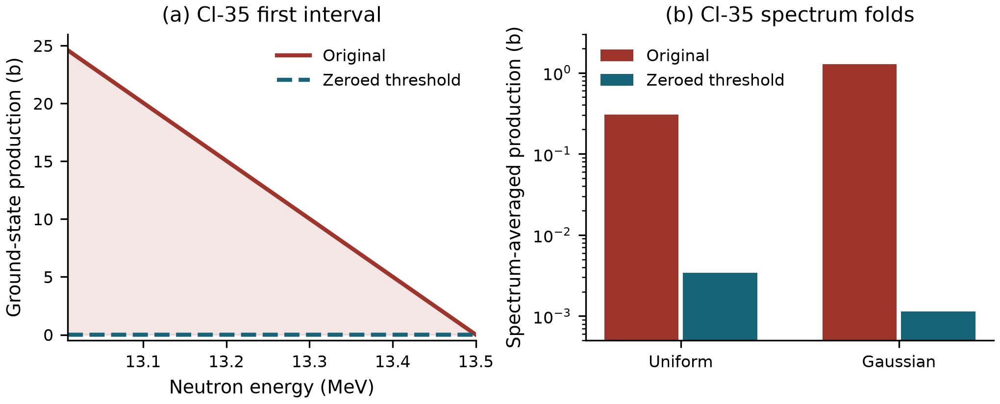

Technical note · Author-review draft · 14 September 2026
Threshold inconsistencies in TENDL-2025 neutron production data: reproducible diagnosis and reaction-rate sensitivity
Connor Avila
Four archived TENDL-2025 neutron evaluations contain nonzero ground-state (n,2n) production cross sections at explicitly tabulated energies where their corresponding reaction totals are zero. The affected targets are Fe-53m, Cl-35, Zr-88, and Y-88. Source hashes, fixed-width records, and a standalone decimal parser establish these contradictions independently of an inventory solver. The maintainer reported an uncleared TALYS work array as the cause and a correction intended for the next TENDL release. A controlled sensitivity calculation replaces only the contaminated first production ordinate with zero and integrates the original and modified tables under two prescribed spectra. For Cl-35, a normalized Gaussian centered at 14 MeV with a 0.5 MeV standard deviation gives 1.28083 b before the intervention and 0.00114522 b afterward, a ratio of approximately 1118. All four point values at 14.1 MeV are unchanged. Independent parsing and numerical quadrature agree with the analytic folds to within 7.4 × 10−15 b. These results demonstrate spectrum-dependent propagation of a threshold-record defect and support explicit cross-file consistency checks. The modified tables are experimental variants, not qualified replacement evaluations.
TENDL is a TALYS-based evaluated nuclear-data library whose production workflow emphasizes completeness, automation, and reproducibility [1]. These properties make reproducible checks of the distributed records useful alongside experimental validation. In particular, a reaction cross section and the cross section for producing one of its residual states provide an internal consistency relation that can be checked without selecting an external benchmark.
The ENDF-6 manual specifies that a negative-Q File 10 subsection begins at threshold with zero cross section. It also requires File 10 production cross sections not to exceed the corresponding File 3 reaction cross section [2, Sect. 10.3]. Here, “total” means the total for the same reaction number, not the total neutron interaction cross section.
An investigation during ACTINV development identified four matching-energy violations of both conditions in archived TENDL-2025 neutron files [3]. This note documents those cases and measures the effect of a narrowly defined correction on spectrum-averaged production. A separate submitted paper describes ACTINV v1.0.0 and its software-validation baseline [4]; the present note reports a subsequent source-data investigation and does not reproduce that paper’s experimental benchmark results.
The inputs are four files from the locally archived TENDL-2025 neutron s30 distribution. The acquisition record identifies the archive as TENDL-n.tgz, 3,517,450,425 bytes, with SHA-256 e547527688506cbe09813364dcefa2aed11f474139bfa129d7cd4ca24fae21fa. Full per-file digests and exact records are provided in the supplement. The archive itself was not downloaded or rehashed for this study; each selected local file was rehashed and matched to the previously recorded identity. The conclusions therefore concern these exact bytes and do not establish the state of a subsequently replaced download.
A standalone Python reproducer reads the original 80-column records using decimal arithmetic. For each case it checks the file digest, MF=3/MT=16 and MF=10/MT=16 sections, ground-state product identifier, negative reaction Q value, and matching first tabulated energies. Here MF identifies the ENDF file type, MT=16 identifies (n,2n), and LFS=0 identifies the ground-state product. No interpolation is needed to establish the four contradictions in Table 1.
Table 1. Explicit threshold contradictions. The final column is the width to the next ground-state production point; 1 b = 10−24 cm2.
| Target | Energy (MeV) | MF=3 total (b) | MF=10 ground state (b) | First interval (keV) |
|---|---|---|---|---|
| Fe-53m | 7.791974 | 0 | 107582 | 8.026 |
| Cl-35 | 13.009500 | 0 | 24.5962 | 490.500 |
| Zr-88 | 12.494780 | 0 | 70.1185 | 5.220 |
| Y-88 | 9.459262 | 0 | 26.0554 | 40.738 |
The study protocol was fixed before the new calculation. In each file, the intervention changes only columns 12–22 of the first ground-state MF=10/MT=16 data record to the ENDF representation of zero. All other bytes, including the energy grid, later ordinates, other states, and MF=3 totals, remain unchanged. The program verifies that the byte differences are confined to this field and records a full-file digest for the in-memory variant. No installed evaluation or processed library is modified.
This intervention isolates the contribution of the reported threshold point. It is consistent with the zero-at-threshold requirement, but it does not establish that every subsequent value or other section in the modified evaluation is correct. In the remainder of this note, “corrected” denotes this single-ordinate experimental variant.
All selected subsections declare linear-linear interpolation. If the first two energies are E0 and E1 and the contaminated first value is A, the removed contribution is triangular:
Δσ(E) = A(E1 − E)/(E1 − E0), E0 ≤ E ≤ E1. (1)
It is zero elsewhere. The unweighted removed area is A(E1 − E0)/2. For a normalized spectral density p(E), the spectrum-averaged ground-state production cross section and rate per target nucleus are
σ̄ = ∫020 MeV σ(E)p(E) dE, r = Φ × 10−24 σ̄. (2)
Cross sections in Eq. (2) are in barns and the integrated flux Φ is in cm−2 s−1. Two spectra are prescribed: a uniform energy density on 0–20 MeV, and a Gaussian with mean 14 MeV and standard deviation 0.5 MeV, normalized on the same interval. These are illustrative sensitivity spectra, not measured reactor or neutron-source spectra. Below the negative-Q threshold the cross section is set to zero, and source coverage through 20 MeV is required. A separate point evaluation at 14.1 MeV provides a control outside every altered interval. Rate examples use Φ = 1014 cm−2 s−1.
The primary calculation integrates linear segments analytically, using Gaussian probability and first moments where needed. Equal-energy records have zero integration width; exact point queries use the last value at that energy. The removed contribution is integrated directly to avoid subtracting nearly equal folds. A separately implemented fixed-field parser and segmentwise adaptive quadrature check the original, corrected, and removed contributions. Exact-decimal triangle areas check the uniform-spectrum differences. Constant and linear fixtures and a deliberately corrupted source-hash check also pass. The frozen comparison tolerance is 10−9 relative or 10−13 b absolute; very small Gaussian differences are not claimed to be resolved by subtraction.
All four source contradictions reproduced with matching full-file hashes. Table 2 shows the complete prescribed spectrum comparison. The largest uniform-spectrum sensitivity occurs for Fe-53m: 21.5902 b in the original table versus 0.00384726 b in the variant. Its contaminated interval is only 8.026 keV wide, but the first ordinate is 107,582 b. Fe-53m is a metastable target; this result must not be interpreted as an effect in ordinary bulk iron.
Table 2. Spectrum-averaged ground-state (n,2n) production. Relative excess is 100(σ̄original − σ̄corrected)/σ̄corrected; it is a sensitivity to the intervention, not an experimentally established error.
| Target | Spectrum | Original (b) | Corrected (b) | Relative excess (%) |
|---|---|---|---|---|
| Fe-53m | Uniform | 21.5902 | 0.00384726 | 561083 |
| Fe-53m | Gaussian | 0.00543666 | 0.00543666 | Below absolute check tolerance |
| Cl-35 | Uniform | 0.305034 | 0.00342334 | 8810.43 |
| Cl-35 | Gaussian | 1.28083 | 0.00114522 | 111741 |
| Zr-88 | Uniform | 0.191682 | 0.182532 | 5.01307 |
| Zr-88 | Gaussian | 0.310539 | 0.30895 | 0.514199 |
| Y-88 | Uniform | 0.147132 | 0.120596 | 22.0042 |
| Y-88 | Gaussian | 0.277057 | 0.277057 | Below absolute check tolerance |
Cl-35 has a wider contaminated interval, 13.0095–13.5 MeV, which overlaps the low-energy tail of the prescribed Gaussian. Its averaged ground-state production changes from 1.28083 to 0.00114522 b, an original-to-corrected ratio of approximately 1118. For the uniform spectrum the corresponding ratio is approximately 89.1. Figure 1 shows the affected interval and the two folds.

Fig. 1. Cl-35 sensitivity to zeroing the first ground-state production ordinate. (a) The shaded area is the removed triangular contribution; the corrected curve is near zero on this linear scale. (b) Spectrum-averaged production under the prescribed uniform and Gaussian spectra; the ordinate is logarithmic. Both panels concern ground-state production, not the MF=3 reaction total.
Zr-88 changes by 5.013% relative to the corrected value for the uniform spectrum and 0.5142% for the Gaussian. Y-88 changes by 22.00% for the uniform spectrum. The Fe-53m and Y-88 Gaussian differences are below the 10−13 b absolute check tolerance and below the precision of subtraction of the reported folds. Their direct triangular integrals are retained in the machine-readable supplement without assigning validated relative precision to these tiny differences.
At Φ = 1014 cm−2 s−1, the Cl-35 Gaussian example gives original and corrected ground-state production rates of 1.28083 × 10−10 and 1.14522 × 10−13 s−1 per target nucleus. The absolute change is 1.27968 × 10−10 s−1. These rates are direct source-term sensitivities. Converting them into activities or inventories requires target populations, irradiation history, decay, depletion, and competing production and removal pathways, which are outside this calculation.
All four cross sections evaluated at exactly 14.1 MeV are unchanged (Table 3), since that energy lies above each modified interval. This control demonstrates why agreement at one incident energy cannot bound the effect under a distributed spectrum.
Table 3. Unchanged ground-state production point values at 14.1 MeV.
| Target | Original (b) | Corrected (b) |
|---|---|---|
| Fe-53m | 0.00562096 | 0.00562096 |
| Cl-35 | 0.00106444 | 0.00106444 |
| Zr-88 | 0.342786 | 0.342786 |
| Y-88 | 0.282371 | 0.282371 |
The maximum absolute disagreement between the analytic folds and the independent quadrature checks was 7.325 × 10−15 b. The independent checks also reproduced the original and variant hashes, the one-field intervention, and the unchanged point values. The original MF=3 tables were folded separately as conservation comparators; they were not used as replacement ground-state production data.
In private correspondence dated 14 September 2026, A. Koning confirmed the defect class and reported an uncleared work array in the TALYS subroutine channelsout.f90. According to that response, a thermal (n,p) cross section was written into a ground-state (n,2n) production record. The maintainer reported a TALYS fix intended to appear in the next TENDL release and suggested zeroing contaminated leading energy points as an interim manual action. This cause and release status are attributed to the correspondence; the present study does not independently inspect the TALYS fix or test a newly issued official evaluation.
The single-ordinate intervention offers a reproducible measurement of one consequence of the reported mechanism. It is deliberately narrower than qualifying an entire repaired file. In particular, the predicted magnitudes depend on the spectrum and do not imply comparable errors for all users of these evaluations.
The matching explicit ordinates make the four primary cases independent of interpolation choices or numerical precision. The rate calculation then shows how a bad ordinate extends over a finite interval under the declared interpolation law. Source-record magnitude alone is insufficient to rank application impact: the large Fe-53m point has negligible weight under the chosen Gaussian, whereas the smaller Cl-35 point strongly affects that fold.
The broader ACTINV audit contains additional construction failures, interpolation-related findings, and processing corrections. Those historical classifications are not a census of independently confirmed defects attributable to this work-array mechanism. Likewise, a rejected target file does not establish that every reaction in the file is inaccurate. This note makes no corpus-wide prevalence estimate, solver-superiority claim, or experimental accuracy claim for the corrected variants.
A useful processing check combines explicit threshold validation with comparisons between state production and the corresponding reaction total. Checks at shared explicit energies provide direct evidence; checks between points additionally depend on interpolation and domain conventions. A corrected upstream release should be checked against the same source-level predicates and then qualified for its intended applications under its own identity.
Four archived TENDL-2025 neutron files contain independently reproducible threshold contradictions between ground-state (n,2n) production and the corresponding reaction totals. A one-ordinate intervention produces strongly spectrum-dependent changes in calculated production rates, including an approximately 1118-fold original-to-corrected ratio for Cl-35 under the prescribed Gaussian, while leaving every tested 14.1 MeV point value unchanged. The results support source-level threshold checks and spectrum-aware sensitivity analysis. They do not qualify the experimental variants as replacement nuclear-data evaluations.
[1] Koning AJ, Rochman D, Sublet J-Ch, Dzysiuk N, Fleming M, van der Marck S (2019) TENDL: Complete nuclear data library for innovative nuclear science and technology. Nuclear Data Sheets 155:1–55. https://doi.org/10.1016/j.nds.2019.01.002
[2] Cross Sections Evaluation Working Group (2023) ENDF-6 Formats Manual: Data Formats and Procedures for the Evaluated Nuclear Data Files ENDF/B-VI, ENDF/B-VII and ENDF/B-VIII. Brown DA (ed). BNL-224854-2023-INRE, ENDF-102, 28 September 2023, Sect. 10.3, pp. 193–194. https://www.nndc.bnl.gov/endfdocs/ENDF-102-2023.pdf
[3] TENDL collaboration (2025) TENDL-2025 nuclear data library, neutron s30 ENDF distribution. https://tendl.imperial.ac.uk/tendl_2025/tendl2025.html. Landing page accessed 14 September 2026; exact archived file identities are supplied in the supplement.
[4] Avila C (2026) ACTINV: an open and reproducible activation and nuclide-inventory solver with executable validation. Manuscript submitted to the Journal of Radioanalytical and Nuclear Chemistry; unpublished.